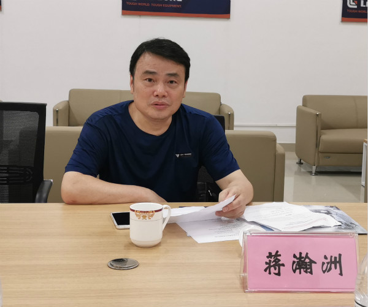

新闻网消息（文/就业处 韦丽娜 图/就业处 张斌 韦丽娜）为更深入地了解高校毕业生就业创业情况，广西教育厅高等学校毕业生就业指导中心主任蒋瀚洲、教育厅高校学生处调研员胡兆阳于2019年6月26日到我校开展就业工作调研。学校副校长林若森，就业处处长何志忠、副处长张斌，机电工程学院党总支书记王大红、财经与物流管理学院党总支书记韦耀业参加调研会。为提升调研工作质量，学校还邀请柳工机械股份有限公司、柳州钢铁集团、上汽通用五菱汽车股份有限公司三家企业代表到校参加调研会。 林若森陪同教育厅调研人员参观了我校官塘校区工业机器人中心、柳工-柳职全球客户体验中心等实训场地。随后，双方在官塘校区T1-C202开展座谈交流。 林若森作学校就业工作汇报。他分别介绍了我校2018、2019届毕业生的签约率、对口率、就业单位类型、地域分布、薪酬统计等就业基本情况，重点介绍了我校实行校园招聘活动二级管理、引用卓越绩效管理模式开展“招-培-就”联动、在中美贸易摩擦背景下及时加大力度开拓各地就业市场等就业工作主要亮点，还就毕业生就业保障制度、就业工作信息化建设、就业工作经验交流等向调研人员提出合理化建议。 柳工机械股份有限公司国际事业部总监黄光周、柳州钢铁集团人力资源部人力策划科副科长何金舟、上汽通用五菱汽车股份有限公司宝骏基地人事管理冉光伟专员分别代表各自企业就目前所在行业的发展势头、就业市场状况、大学生招聘条件及晋升通道、校企合作模式等方面与教育厅调研组开展深入交流。 其他与会人员分别从各自工作岗位分管的工作内容、存在的问题及建议向调研组进行就业相关工作汇报。
蒋瀚洲、胡兆阳在参观后对学校的办学实力、实习实训管理、校企合作等都给予了高度评价。在听取汇报后表示，此次到柳职调研收获很大，感受到学校发展方向明确、办学理念先进、教学实力雄厚、管理模式创新、办学成果显著、就业工作开展扎实有效，鼓励我校进一步加强与企业之间的联动，主动响应行业企业需求培养人才，顺应工业4.0的浪潮开展教育转型升级，向更高的目标发展。 最后，林若森代表学校对调研组的肯定和鼓励表示感谢。他表示，此次调研是一次检查，也是一次指导，调研组给出的宝贵建议，将推动我校就业、教学等各项工作向更高质量方向发展。

调研会议